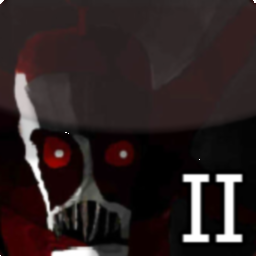
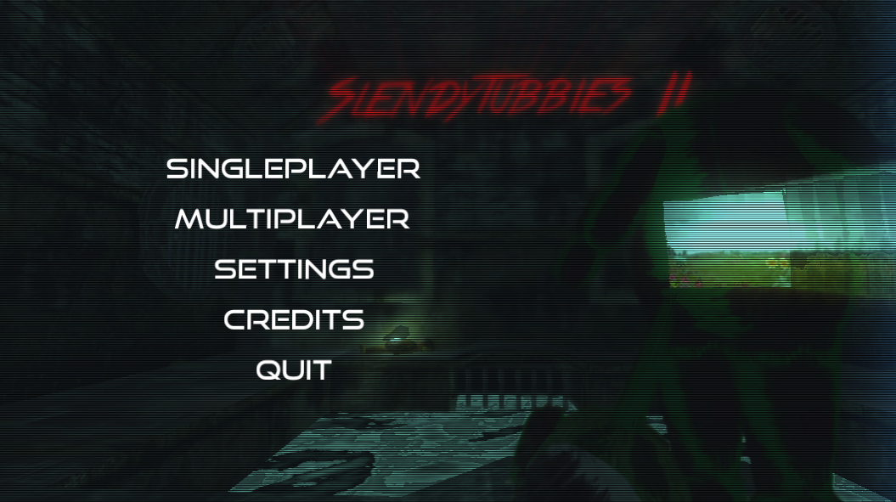

- Developer: ZeoWorks
- Engine: Unity 4 (Unity 5 after Updates)
- Platform: Microsoft Windows, OS X
- Release: May 1, 2014
- Genre: Survival Horror, Item Collecting
- Language: English, Spanish
- Canon: Partially
- Status: Account log-in broken
- Latest version: V2.2
- Previous installment: Slendytubbies
- Next installment: Slendytubbies III (numerically), Dipsy's Workshop (release)


Slendytubbies II (acronymed to S2 or ST2) is the sequel of the original Slendytubbies. It is a much more expansive version of the first game, featuring new and different mechanics and multiple maps other than just Main Land, that also include new threats. The game is credited for the inclusion of new maps and enemies, which would go on to become a staple of the series.
It was said to have happened 5 years after the original game. However, this was changed in Slendytubbies III, making this installment only partially canon.
Gameplay
The gameplay is similar to the original Slendytubbies: but with a twist. Instead of a flashlight, players have a night vision camera combined with a built-in flashlight and can use it by right-clicking. Older versions had a limit for how long you could use the camera (ten seconds), but it was removed in newer versions.
New to Slendytubbies II is the addition of different maps, so people can play more than just Main Land and its 3 time periods. The new maps come with different enemies, mostly featuring the individual teletubbies other than Tinky Winky.
The enemy behavior has experienced a significant overhaul; instead of knowing where the player is right off the bat, they'll actively try to guard the custards that a player is the closest to. Once the enemy sights the player, they'll start endlessly chasing them. It is advised that the players try to avoid the enemies at all costs as if an enemy sights the player once, they'll keep chasing them until the game ends.
Slendytubbies II sees the deprecation of most of the map mechanics in the original Slendytubbies, such as the falling trees, intermissions, and etc.
New features in Slendytubbies II
- Multiplayer Mode uses a brand new Lobby system and no longer requires Hamachi.
- A Night Vision Camera with a flashlight is used, instead of just a flashlight.
- New animations and textures for the player.
- New Easter Eggs.
- New Maps and Monsters.
- New Pop-ups.
- New system that allows you to select the Custard Amount (from 1 to 25)
- Oculus Rift Support
- 3D Anaglyph Support
Plot
This game has a bit more of story than most people know, being revealed on the Zeoworks website back in 2014. It can be found on WayBackMachine.
The story is narrated like this:
Slendytubbies II continues the story after the first 'Slendytubbies' game. 5 long years has past since the events of teletubby land. You, the white teletubby have been trying to figure out what happened. After 5 years of research on the teletubby custards you collect from teletubby land, you believe that the custards are genetically modified. You travel to teletubby land once again (which is now destroyed and swamp-like) to collect more custards for your research, only this time you find a secret entrance inside the teletubby house which leads to an unknown passage. You travel further into this passage and find some sort of secret layer full of unknown technology. More custards are inside this layer, you believe they are fresh and hold the truth and try to collect them for research. As you are doing so, you find hints that this layer genetically creates teletubbies and controls teletubby land. This explains the unknown speakers that instruct the old teletubby family what to do during the day. You begin to believe that tinkywinky took a bad dose of the genetic teletubby custard. You fear that teletubbies are not born, they are made... and only to be hampsters in a cage. There is only one way to know for sure however, you must collect all the custards and find out the truth.
Downloads
All downloadable versions of the game can be found here. The official download page for the game can also be found here.
Trivia
- In V1.5, there was a bug where joining servers would not work, since the game would get stuck on the connection screen. This bug was fixed in V2.0, until the servers were shut down to prior to the release of V2.1.
- In V2.0, there was a bug where Tinky Winky was completely static in TubbyCraft. This was fixed in version V2.2.
- Since V1.5, there was an exploit that let people spawn monsters via the Admin Console to bother other players. This exploit was removed in V2.0, but it was reintegrated using a DLL uploaded by a Spanish YouTuber. However, this was finally fixed in V2.1, along with the removal of Cheat Engine support.
- A long variety of the models used for the enemies in the game, where from the Viral Breakout pack from bond1 for FPS Creator.
- Due to this pack being inspired by famous media monsters, these models have often caused false accusations against Sean Toman for stealing models from other titles.
- ZeoWorks Staff have access to the Admin Console which allows them to spawn in NPCs, props and effects. Some peculiar characters are also able to be spawned and are listed below.
- Tinky Tank BIG (a bigger version of Tinky Tank)
- Rick Astley
- Freddy Fazbear
- Bonnie
- Chica
- Foxy
Text by: Slendytubbies Wiki